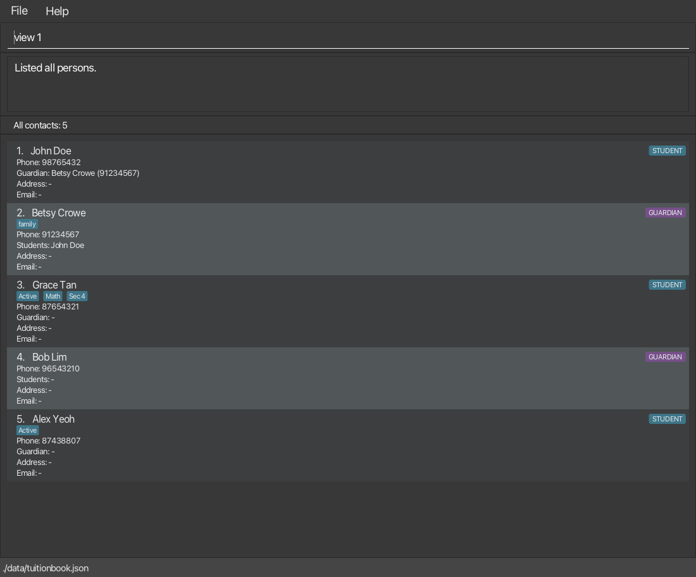

TuitionBook helps private one-to-one home tutors manage students, guardians and their contact details in one place. Link students to guardians to find the right person to call, keep home addresses for visits, and use tags to organise contacts by level, subject or status. You mainly use typed commands to work with the desktop app, which stores your contacts locally.
This guide helps English-speaking tutors set up TuitionBook, record contacts and find the right person to call. You do not need programming knowledge. Use TuitionBook with your operating system set to an English language setting, such as English (Singapore), English (United Kingdom) or English (United States). Contact names can contain letters from other languages, subject to the rules under each command.
Using this guide: New to TuitionBook? Start with the Quick start to set up and launch the app, then use the Command reference for each command's rules and examples. The Task walkthroughs combine commands for common jobs, while Data and backups covers saving, transfer and recovery. The Command summary below is a cheat sheet for users who already know the commands. If something goes wrong, use Troubleshooting. The Glossary explains terms such as role, guardian link, index and JSON.
Version: v1.5 has been released. This guide is being updated for v1.6, which is still in development. If you are using the v1.5 JAR, refer to the v1.5 User Guide saved with that release. Guides for earlier versions are also available: v1.4 and v1.3. These release-specific guides open on GitHub, so they look plainer than this page.
How to read command formats:
Words in UPPER_CASE are the parameters to be supplied by the user.
For example, in add n/NAME, replace NAME with a value such as John Doe.
Items in square brackets are optional.
For example, n/NAME [t/TAG] can be used as n/John Doe t/friend or as n/John Doe.
Items followed by ... can appear zero or more times.
For example, [t/TAG]... may be omitted, or written as t/friend or t/friend t/family.
Follow each command's displayed order. Fields with a marker such as n/ or p/ can be supplied in either order, but unmarked values such as indexes stay in the position shown.
Command words can be typed in any letter case: list, LIST and LiSt all work. Prefixes such as n/ must be lowercase, and clear confirm must use the lowercase word confirm.
Enter one command at a time and press Enter to run it. If you paste text containing tabs or line breaks, they become spaces. Pasting never runs a command by itself, so check the text before pressing Enter.
Move your pointer over a command block to show its copy button. Click it to copy the example, then paste it into TuitionBook. Run one command at a time. You can still select and copy text yourself.
For copied-text problems, unusual characters, field boundaries and escaping, see Advanced command input.
Tip: use double quotes when a value contains text like a/ or s/.
Names, addresses and tags sometimes contain text that looks like a prefix, such as Rina a/p Kaur or c/o. Wrap the whole value in straight double quotes so TuitionBook keeps it together:
n/"Muhammad s/o Ali"a/"20 Main Road, c/o Rina a/p Kaur"t/"study t/weekly"The surrounding quotes are not saved. Spaces alone do not require quotes: t/Sec 4 works. A slash within a word also works without quotes: t/Math/Science. Use quotes when the value contains a space followed by text such as a/, s/ or t/. See Quoted values and escaping for the full rules.
Index examples refer to the sample contacts. Each example starts from the full sample list.
| Action | What it does | Format and example |
|---|---|---|
| Add | Adds a student or guardian contact. | add r/ROLE n/NAME p/PHONE [e/EMAIL] [a/ADDRESS] [t/TAG]... e.g., add r/student n/James Ho p/22224444 e/jamesho@example.com a/123, Clementi Rd, 1234665 t/friend t/colleague |
| Clear | Deletes every contact. | clear confirm |
| Delete | Deletes the contact at the selected index. | delete INDEXe.g., delete 3 |
| Edit | Changes details of the selected contact. | edit INDEX [n/NAME] [p/PHONE] [e/EMAIL] [a/ADDRESS] [t/TAG]...e.g., edit 2 n/James Lee e/jameslee@example.com |
| Exit | Closes TuitionBook. | exit |
| Reload | Reloads contacts from the data file. | reload |
| Find | Searches contact names. | find KEYWORD [MORE_KEYWORDS]...e.g., find rac bobMatches any keyword ( rac or bob). |
| Help | Opens the command help window. | help |
| Link | Links a student to a guardian. | link STUDENT_INDEX GUARDIAN_INDEX e.g., link 1 2 |
| List | Shows all contacts or filters them by role and tags. | list [r/ROLE] [t/TAG]...e.g., list r/student t/active t/MATH |
| Tag | Adds one or more tags to a contact. | tag INDEX t/TAG [t/TAG]...e.g., tag 1 t/Math t/Sec 4 |
| Untag | Removes one or more tags from a contact. | untag INDEX t/TAG [t/TAG]...e.g., untag 3 t/Math |
| Unlink | Removes a student's guardian link. | unlink STUDENT_INDEXe.g., unlink 1 |
| View | Shows full details for a contact. | view INDEX [v/]e.g., view 1 v/ Adding optional v/ also shows full details of any linked contacts. |
Before you begin, install Java 25 or later and choose a folder where you can create files. TuitionBook saves its data beside the application JAR. To try the sample contacts without mixing them with real contacts, use a new, empty folder. TuitionBook enforces one running copy per folder.
Check Java by opening a terminal (Terminal on macOS/Linux, or PowerShell on Windows) and entering java -version.
Expected: The version starts with 25 or a later number. If Java is missing or older, follow the Java installation guide before continuing. Mac users: Follow the macOS Java instructions.
Download the .jar file for the version you want from GitHub Releases, then copy it into your chosen folder.
In the terminal, run one of the commands below. Replace the example path with the actual path and filename of your downloaded JAR, keeping the surrounding quotes.
java -jar "/path/to/tuitionbook.jar"java -jar "C:\path\to\tuitionbook.jar"Expected: The TuitionBook window opens. In a fresh folder, the contact list is empty and a dialog explains that no data file was found. Dismiss the dialog. If the window does not open, see Troubleshooting.
Click the command box labelled Enter command here..., type add r/student n/John Doe p/98765432, and press Enter.
Expected: John Doe appears as a student with a displayed index. The result area confirms the addition. A guardian link, email and home address are optional.
Enter find John in the same command box.
Expected: John Doe appears in the results. With only John Doe added, the result area reports 1 person(s) listed!.
Enter list.
Expected: All your contacts appear again. The index beside each contact is the number to use in commands such as view 1.
Enter help to see the command summary. Close the Help window when you are done, then enter exit in the main window.
Expected: TuitionBook closes. Successful contact changes have already been saved, so there is no separate Save command.
Run the same terminal launch command again.
Expected: John Doe is still present. To try the examples in the Command reference, add the sample contacts next. You can also follow the status-tag workflow.
Enter instructions in the command box and check the result area for success or error messages. The contact list shows the contacts you are currently working with. The view command temporarily replaces the list with full contact details.
The screenshot below shows TuitionBook with the sample contacts. The command view 1 is typed but has not been run yet.

view, edit and delete. They can change when the list changes.Index-based examples in this guide use the following sample contacts. Use a new, empty folder used only for practice contacts, not one containing real contacts. Starting from an empty contact list, enter these commands in order. If you completed the Quick start, John Doe already exists, so skip the first command.
Add John Doe as a student:
add r/student n/John Doe p/98765432
Add Betsy Crowe as a guardian:
add r/guardian n/Betsy Crowe p/91234567 t/family
Add Grace Tan and her tags:
add r/student n/Grace Tan p/87654321 t/Active t/Math t/Sec 4
Add Bob Lim as a guardian:
add r/guardian n/Bob Lim p/96543210
Add Alex Yeoh as a student:
add r/student n/Alex Yeoh p/87438807 t/Active
Link John Doe to Betsy Crowe:
link 1 2
Then enter list. The table below lists the expected contacts and indexes. For how these appear in the app, see the annotated screenshot.
| Index | Name | Role | Tags | Linked contacts |
|---|---|---|---|---|
| 1 | John Doe | Student | - | Betsy Crowe |
| 2 | Betsy Crowe | Guardian | family | John Doe |
| 3 | Grace Tan | Student | Active, Math, Sec 4 | - |
| 4 | Bob Lim | Guardian | - | - |
| 5 | Alex Yeoh | Student | Active | - |
Unless a section says otherwise, each example starts from this full list. Enter numbered examples in order, as each step continues from the previous one. Examples that change contacts, such as edit or delete, change the results of later examples. To start again, enter clear confirm only in the new, empty folder you chose for practice, then re-enter the sample contacts.
helpOpens the Help window, which contains a scrollable summary of every command and its syntax.
Format: help
Help at the top of the main window, or by pressing F1 at any time.Open User Guide to open this guide in your web browser. If the browser doesn't open, click Copy URL and paste the address into your browser yourself. You need an internet connection to view the online guide.addAdds a student or guardian contact to TuitionBook.
Format: add r/ROLE n/NAME p/PHONE [e/EMAIL] [a/ADDRESS] [t/TAG]...
Example:
add r/student n/Sam Lee p/98760001 e/samlee@example.com t/Math
Required and optional fields
ROLE, NAME and PHONE are required. Email, address and tags are optional.ROLE is student or guardian (any letter case, using ordinary English letters).link.list.Contact details at a glance
NAME: The contact's name, for example Sam Lee, Mary-Jane O'Neil or 陈俊杰.PHONE: The number you use to contact them, for example 98760001, +65 9876 0001 or 6123 4567 (Office) ext. 89.EMAIL: An optional email address, for example samlee@example.com.ADDRESS: An optional one-line home address, for example 123 Clementi Road, #01-01.TAG: An optional label for organising contacts, for example Math, Sec 4 or Active. A contact can have any number of tags, including none.These examples illustrate common values. See Detailed contact field rules for the full range of allowed values and any exceptions.
For values containing prefix-like text and for literal quotes or backslashes, see Quoted values and escaping.
TuitionBook stops you from adding the same person twice. Two contacts count as the same person when they have the same role, the same name and the same phone number. A student and a guardian can therefore share a name and phone number. When comparing:
john doe with additional spaces between the words still matches John Doe. Accented letters typed in different ways also match.(HP) in phone numbers are ignored, and x, ext and ext. count as the same. However, a leading + matters: +6591234567 and 6591234567 are different numbers.These differences are ignored only for this check. TuitionBook still saves each name and phone number with the spelling, capital letters and formatting you entered.
A young student without their own phone number can use their guardian's phone number and email. They remain separate contacts because their roles differ, even if their names are the same.
More examples:
add r/student n/Sam Lee p/98760001 e/samlee@example.com a/John street, block 123, #01-01
add r/guardian n/Mary Lee p/1234567 t/family
add r/student n/Alex Lim p/91234567 t/Sec-4 t/referred-by-Mrs-Lim
add r/student n/"Rina a/p Kaur" p/91234567 a/123 Main Street
listShows all contacts, or only the contacts with a given role and/or tags.
Format: list [r/ROLE] [t/TAG]...
list on its own shows every contact in its original order.r/student to show only students or r/guardian to show only guardians. You can give r/ only once.t/TAG adds a condition: a contact is shown only if it has all the tags you list. Tags must match completely, but letter case doesn't matter, so t/math matches Math.Sec··4 does not match Sec·4 (Using · as a placeholder for one space to make spaces visible here). active also does not match active!.friends and friendS. Filtering ignores letter case. For example, list t/friends matches contacts tagged friends, friendS or any other letter-case variation.r/ or t/ after a space, use double quotes: list t/"study t/weekly". See Quoted values and escaping.0 person(s) listed!. Enter list to see everyone again.list first so that both contacts are shown.Reading a contact card
STUDENT or GUARDIAN badge, followed by some details of the contact, including the contact's phone, email and address. Missing details are shown as -.Guardian: line with the guardian's name and phone number. A guardian's card has a Students: line listing their linked students, even students hidden by the current filter.…. Hover over it to see the full text, or use view INDEX v/ to see every detail.The bar above the cards explains the current list. Matching counts displayed contacts that still satisfy the query. Retained counts displayed contacts that stopped matching (usually after edits) but remain so their indexes do not suddenly change. Hidden contacts count in neither number. For a filtered view, Shown = Matching + Retained. See Keeping displayed indexes stable for why rows are retained and how to refresh them.
Case variants and AND filtering
Suppose Ana has only the tag friends, Ben has friendS and Math, and Cara has friends, friendS and math.
| Query | Result | Why |
|---|---|---|
list t/friends t/friendS | Ana, Ben and Cara | Both conditions match the same tag regardless of letter case, so repeating the condition does not narrow the results. A contact does not need both stored spellings. |
list t/friends t/Math | Ben and Cara | These are different conditions, so normal AND filtering requires one friends-equivalent tag and one Math-equivalent tag. |
Use tag and untag when the exact stored spelling matters.
viewShows the selected contact's full details and information about any linked guardian or students.
Format: view INDEX [v/]
INDEX is the number shown beside the contact in the current list.v/, linked contacts are shown as NAME (PHONE). For a student, you see their guardian. For a guardian, you see their students.v/ to show the linked contacts' full details too.No guardian linked. or No students linked. Linked contacts are shown even if the current filter hides them.-. Tags are sorted alphabetically and each is shown in square brackets, such as [Math]. A backslash is added before any [, ] or \ inside a tag so you can tell where each tag ends.view doesn't change any contacts or the current filter.Copying contact details
To copy a phone number, email address or other contact details:
view INDEX. Use view INDEX v/ if you also need full details of linked contacts.To copy contact details, use the details pane. Text on contact-list cards cannot be selected. You can also select and copy text from the result area.
Examples using the sample contacts:
view 1 replaces the contact list with John Doe's details and shows Guardian: Betsy Crowe (91234567).view 1 v/ shows John Doe's details together with his guardian Betsy Crowe's full contact details.view 2 replaces the contact list with Betsy Crowe's details and lists John Doe (98765432) as a linked student.view 2 v/ shows Betsy Crowe's details together with her linked student John Doe's full contact details.list r/student followed by view 1 v/ still shows Betsy Crowe's details, although guardians are hidden from the list.
editEdits an existing contact in TuitionBook.
Format: edit INDEX [n/NAME] [p/PHONE] [e/EMAIL] [a/ADDRESS] [t/TAG]...
INDEX is the number shown beside the contact in the current list (1, 2, 3, …).edit reports No changes made: the specified values already match NAME and does not save.add, including using double quotes when a value contains text like a/, such as edit 1 n/"Rina a/p Kaur".e/ or a/ with nothing after it. a/"" also removes the address.t/ replaces all of the contact's tags. Retype any tags you want to keep, or use tag and untag to change one tag at a time. To remove every tag, type t/ with nothing after it.edit. Use link and unlink to change guardian links instead.Examples using the sample contacts:
edit 1 p/91110000 e/johndoe@example.com changes John Doe's phone number to 91110000 and adds the email address johndoe@example.com.edit 2 n/Betsy Crower t/ renames Betsy Crowe to Betsy Crower and removes her family tag. John Doe stays linked to her.tagAdds one or more tags while keeping the contact's existing tags.
Format: tag INDEX t/TAG [t/TAG]...
INDEX is the number shown beside the contact in the current list. Students and guardians can both be tagged.add.Math and math are saved as two different tags, even though list treats them as the same.t/ or p/ after a space: tag 1 t/"study t/weekly" adds one tag, study t/weekly. See Quoted values and escaping for literal quotes, backslashes and feedback formatting.Example using the sample contacts:
Grace Tan (3) has Active, Math and Sec 4. Enter:
tag 3 t/Science t/Math
This adds Science while keeping her existing tags, and reports Added tags to Grace Tan: "Science". Math is not listed because it was already present. Use add instead to supply a new contact's complete initial tag set, or edit to replace an existing contact's entire tag set.
untagRemoves only the specified tags while keeping the contact's other tags.
Format: untag INDEX t/TAG [t/TAG]...
tag: same index, tag rules and double quotes.Tags not present:. If none of them are present, nothing changes.edit INDEX t/ instead.Examples continuing from the tag example, where Grace Tan (3) has Active, Math, Science and Sec 4. Enter them in order:
untag 3 t/Math t/Science removes both tags, leaving Active and Sec 4, and reports Removed tags from Grace Tan.untag 3 t/Sec 4 t/Math removes Sec 4, leaving only Active, and reports Removed tags from Grace Tan. Tags not present: "Math".linkLinks a student contact to a guardian contact.
Format: link STUDENT_INDEX GUARDIAN_INDEX
list first.Guardian: and Students: lines on the cards update straight away.Examples using the sample contacts, entered in order:
link 5 4 links Alex Yeoh to Bob Lim and reports Linked student Alex Yeoh to guardian Bob Lim.link 1 4 moves John Doe from Betsy Crowe to Bob Lim and reports Linked student John Doe to guardian Bob Lim. Previous guardian unlinked: Betsy Crowe.link 1 4 again reports Student John Doe is already linked to guardian Bob Lim. and makes no change.unlinkRemoves a student contact's guardian link without deleting either contact.
Format: unlink STUDENT_INDEX
STUDENT_INDEX is the number shown beside a student in the current list.Example using the sample contacts:
unlink 1
This removes John Doe's link to Betsy Crowe and reports Unlinked student John Doe from guardian Betsy Crowe. Both contacts remain. Running unlink 1 again reports Student John Doe has no linked guardian.
findFinds contacts whose names contain any of the keywords you type, even as part of a name.
Format: find KEYWORD [MORE_KEYWORDS]...
rac matches Grace Tan.GRACE matches Grace Tan. Accented letters typed in different ways also match, and STRASSE matches Straße.Examples using the sample contacts:
find gr, find rac, find ace, and find GRACE each list only Grace Tan.find rac bob lists Grace Tan and Bob Lim, whose names contain rac or bob.find alex john lists John Doe and Alex Yeoh. Any other contacts with alex or john anywhere in their names would also appear. If no names match, the list is empty. Enter list to show every contact again.
deleteDeletes the specified contact from TuitionBook.
Deletion is immediate and cannot be undone. Check the contact name and its current displayed index before running the command. Keep a backup if you may need to restore the contact.
Format: delete INDEX
INDEX is the number shown beside the contact in the current list (1, 2, 3, …).Examples using the sample contacts. Each example starts from the full sample list:
list followed by delete 2 deletes Betsy Crowe, the 2nd contact in the full list. Because she was John Doe's guardian, the result also reports that John Doe is no longer linked to a guardian. Grace Tan, Bob Lim and Alex Yeoh move up to indexes 2 to 4.find Betsy followed by delete 1 deletes Betsy Crowe, the 1st contact in the find results.clear confirmDeletes all contacts, including any hidden by the current filter.
Format: clear confirm
This deletes every contact and cannot be undone. If you might need your contacts later, close the app and copy its data file somewhere safe first.
confirm. clear on its own, or with any other word, shows a reminder and deletes nothing.clear confirm does not delete TuitionBook's log files (tuitionbook.log.0 to tuitionbook.log.4, in the same folder as the JAR). These files may contain details from commands you entered earlier, so check them before sharing them with anyone. To remove them, close TuitionBook and delete those files. Normal file deletion does not securely erase data.
reloadReads your saved contact file again without restarting TuitionBook. Use it to retry loading a file after correcting a problem.
Format: reload
A successful reload replaces the contacts currently in the app with those in the file. Contacts are not combined. Before reloading, note any contacts that exist only in the app so you can re-enter them afterwards.
What happens when you reload
Recovering while TuitionBook stays open
For routine manual edits, close TuitionBook, edit the file, then reopen it. If you are correcting a loading problem while the app stays open:
reload. Check the result and contact list before making changes. If loading succeeds, re-enter any missing contacts you noted. If it fails, follow the new warning before trying again.Reload does not repeat a command that was undone after a save failure. Fix the saving problem and enter that command again yourself.
exitCloses TuitionBook. Your changes are already saved, so there is nothing to save on exit.
Format: exit
Tip: Choose a consistent way of naming tags, for example Sec4 for level, AMath for subject, and Active or Inactive for status. You choose your own tags, and TuitionBook doesn't check them against any list. Tag filters ignore letter case, but spaces and punctuation must match.
This independent workflow uses its own contact, Alex Tan. To try it, start a new, empty folder used only for practice contacts, launch TuitionBook there, then enter these steps in order:
add r/student n/Alex Tan p/91234561 t/Active t/Sec4 t/AMath.list r/student t/Sec4 t/AMath to show students with both the level and subject tags.edit 1 t/Inactive t/Sec4 t/AMath when Alex stops tuition. Retype every tag you want to keep: supplying t/ values replaces the entire tag set. Include any additional tags on your real contact too.list r/student t/Active. Alex is excluded because the Active tag was replaced, not because Inactive automatically hides contacts.list r/student t/Inactive, then edit 1 t/Active t/Sec4 t/AMath to label Alex active again.list to show every contact regardless of status tags.When you run list or find, the contacts it shows become your working set, and the numbers beside them are the indexes you use in commands. TuitionBook keeps these indexes steady so that the contact you meant doesn't move while you work:
edit, tag, untag, link and unlink never reorder the list. If a change means a contact no longer fits your filter, it stays where it is, marked No longer matches the query, with a command you can run to refresh the list.list or find again. Hidden contacts are excluded from both Matching and Retained.Query:, for example list t/Active. This removes retained rows that no longer match and adds now-matching hidden rows. list on its own shows everyone.With a filter, the bar above the list can show Shown: 2 of 5 contacts · Matching: 1 · Retained: 1. Shown = Matching + Retained: Matching rows currently satisfy the query, while Retained rows stopped matching but remain displayed to preserve their indexes.
To verify this with the sample contacts, start from the full sample list and enter these steps in order:
list t/ActiveShown: 2 of 5 contacts · Matching: 2 · Retained: 0.untag 1 t/Activelist t/ActiveDeleting is the exception: contacts below the deleted one move up. Running list, find, reload, clear confirm, or restarting can also change indexes. Both reload and restarting show the full list.
These rules apply when adding or editing a contact and when TuitionBook reads contacts from its data file.
NAME:
.), apostrophes (' or ’), forward slashes (/) and hyphens (-). Other symbols, such as @, # or double quotes, are not allowed.PHONE:
+.-) or a slash (/), for example 9123 4567, 9123-4567 or +65/9123/4567. A group can also be put in brackets, as in +65 (9123) 4567.(HP) or (Office 2). A label contains English letters, digits and single spaces, with at least one letter.x123, ext 123 or ext. 123.+65 (9123) 4567 (HP) ext. 89 is accepted.EMAIL must look like name@example.com:
@ and periods.@: up to 64 characters, using English letters, digits (0-9), periods (.), and these symbols: ! # $ % & ' * + - / = ? ^ _ ` { | } ~. A period cannot be first or last, and two periods cannot appear in a row. The other allowed symbols can appear at the start or end. For example, _alice+@example.com is accepted. Spaces and double quotes (") are not allowed.e/alice.t/user@example.com t/Math stores email alice.t/user@example.com and tag Math. If an email starts with text such as t/, put it directly after e/: e/t/user@example.com. A space before t/ starts a tag field, so edit 1 e/ t/user@example.com clears the email and sets the tag to user@example.com.@: a domain such as example.com or school.edu.sg, made of English letters, digits (0-9) and hyphens, separated by periods. Each part can be up to 63 characters long, must start and end with a letter or digit, and the last part must be at least 2 characters long.ADDRESS must fit on one line, can be up to 200 characters long, and must contain at least one visible character. It can contain any letters and symbols. Spaces at the start or end are ignored when you type a command.
TAG:
may contain English letters, digits (0-9), spaces, and punctuation and symbols from a standard English keyboard, for example Sec 4, Math--Science, C++, $50/hr or Mrs. Lim's. Letters with accents, other languages and other symbols (such as —) are not allowed.
cannot be blank. Spaces at the start or end are ignored.
keeps the exact spacing inside it. The commands below differ only in the space between Sec and 4, with two spaces in the second command. They store different tags and do not match each other in list:
add r/student n/One Space p/90000001 t/Sec 4
add r/student n/Two Spaces p/90000002 t/Sec 4
As a visible-space illustration, the values are Sec·4 and Sec··4, where each · represents one space and is not typed.
For values containing prefix-like text and for literal quotes or backslashes, see Quoted values and escaping.
а, a full-width ｌｉｓｔ or a full-width index １, are not recognised.help, exit and reload take nothing after the command word.add, edit, list, tag and untag, a space followed by English letters and / starts a new field. An unknown marker such as ee/ is rejected instead of being silently saved. Quote a whole value when this kind of text belongs inside it.Wrap a whole name, address or tag in straight double quotes when it contains prefix-like text after a space: n/"Rina a/p Kaur", a/"20 Road c/o Rina" or t/"meet at a/c room". This works in add, edit, list, tag and untag. The enclosing quotes are not saved. Names cannot contain literal quotes or backslashes.
Inside a quoted address or tag, \" means one literal double quote and \\ means one literal backslash. Other backslash sequences are not decoded: for example, \n stores a backslash followed by n, not a line break. Unquoted values do not decode any escapes.
The feedback for tag and untag surrounds each tag with quotes and adds backslashes before literal quotes and backslashes so the stored value is unambiguous. The table contrasts all three forms:
| What you type | Stored tag value | Escaped form in feedback |
|---|---|---|
tag 1 t/"\"" | one double quote: " | "\"" |
tag 1 t/\" | backslash then double quote: \" | "\\\"" |
tag 1 t/"\\" | one backslash: \ | "\\" |
tag 1 t/\\ | two backslashes: \\ | "\\\\" |
After a closing quote, end the command or type a space followed by the next field. A value that does not start with " is unquoted and stores quotes and backslashes literally.
find compares names as literal text without regard to letter case. It also treats equivalent composed and decomposed accents alike and handles the documented Straße/STRASSE case consistently. It does not apply duplicate detection's space or phone normalisation.
TuitionBook saves automatically after every command that changes your contacts or guardian links. There is no Save command.
reload or restart. See Editing the data file.Only one TuitionBook window can use a folder at a time. If you start it again from the same folder, the second copy shows an error and closes without touching your contacts. To run a separate copy, put the JAR in a different folder. Each folder has its own contacts and settings.
TuitionBook creates a file named .tuitionbook.lock in its folder to make this check. It's safe to leave this file after closing the app, but don't delete it while TuitionBook is running. This check only works between copies of this version of TuitionBook. Other programs can still edit the data file.
Close TuitionBook on both computers and back up both data files. Copy the application JAR and data/tuitionbook.json together, keeping the data file in the data folder beside the JAR. Copying over an existing data file replaces its contacts. TuitionBook does not merge files. Open TuitionBook only after copying is complete.
Your contacts are saved in data/tuitionbook.json, inside the folder that contains the TuitionBook JAR. Settings and log files are kept in the same folder. Normally, manage contacts through TuitionBook's commands and do not edit the JSON file yourself. Manual editing is an advanced option for deliberate data-file work or recovery when the instructions below require it.
Avoid manual editing unless it is necessary for recovery or a deliberate advanced task. A small JSON mistake can make the whole file unreadable. If TuitionBook can't read the file, it starts with an empty contact list (see If TuitionBook can't read the data file below).
To edit the file:
If you are fixing the file after a problem and want to keep TuitionBook open, use reload instead.
Rules for the data file
add, including the 100-character limit for names and 200-character limit for addresses.id: a code that identifies the contact, in the format TuitionBook creates (known as a UUID), for example 123e4567-e89b-12d3-a456-426614174000. Every contact needs one, except in files from older versions (see below). Don't change it or make up your own, such as student-1, and don't give two contacts the same id. Any of these makes the whole file unreadable.role: STUDENT or GUARDIAN.guardianId: for a student, the id of their one guardian, written in double quotes. Leave it out or set it to null if the student has no guardian.
id such as ["123e4567-e89b-12d3-a456-426614174000"], makes the file unreadable. So does a value in curly brackets ({}).id, such as a number, true/false or text in the wrong format, is treated as an invalid guardian link and removed.ids differ, and make the file unreadable. A student and a guardian can share a name and phone number.persons and the contact fields id, role, guardianId, name, phone, email, address and tags. Field names use the exact letter case shown here. An unrecognised field such as Email makes the file unreadable, so a typing mistake cannot silently discard a value.}, or the same field name used twice in one contact, makes the file unreadable." Math " becomes "Math". Spaces inside a tag are kept."\ Math"). This is not valid JSON and makes the whole file unreadable.id, role and guardianId is loaded as a student with no guardian, and the missing fields are added the next time TuitionBook saves. If an older data/addressbook.json exists, TuitionBook moves it to data/tuitionbook.json the first time it starts. If it can't move the file (for example, because it isn't allowed to change that folder), it keeps using data/addressbook.json as your data file and tries again next time.Invalid guardian links
If a student's guardianId doesn't point to a guardian in the file, TuitionBook still loads the student but removes that link. This happens when the guardianId is not a valid id, points to a missing contact or to another student, or points to the student themselves. A warning lists each affected contact and the reason. Check the file before making changes, because the next save removes those links permanently. Any guardianId on a guardian is also removed.
If TuitionBook can't read the data file
TuitionBook starts with an empty contact list and shows the most specific warning it can. If the file can be parsed far enough to identify a particular contact, the warning gives its position and, when that contact's name is valid, its name. For example: Contact 3 in the file ("Alex Yeoh"): Emails must be in the format name@example.com. or Contact 4 in the file: Missing "name" value. Contacts are counted from the top of the file, starting from 1.
This diagnosis is best-effort. Broken or incomplete file structure may prevent TuitionBook from identifying a contact, name or exact location, and one problem may prevent it from discovering later problems in the same file. Use the reported cause as a starting point and check the rest of the file too. A missing id is not automatically an error because contacts saved by older supported versions may legitimately omit id, role and guardianId.
TuitionBook also moves the unreadable file, unchanged, to a backup in the same folder with .backup added to its name, for example tuitionbook.json.backup (or .backup.1, .backup.2 and so on if that name is taken). The warning shows the exact name and location, so check it rather than assuming. You can then keep using TuitionBook, and new contacts are saved to a fresh data file.
To get your old contacts back:
.backup file somewhere safe..backup file.If TuitionBook can't create the backup, it leaves the file where it is and won't save anything until you fix or move the file and restart (or use reload).
.jar application file you download and run with Java.n/ or t/ that tells TuitionBook what the value after it is (here, a name or a tag).student or a guardian. You can enter the role in any letter case. It appears as a STUDENT or GUARDIAN badge on the contact card.edit, delete and view use it to pick a contact. It can change after delete, list, find, reload, clear confirm or a restart.list or find. Changing a contact keeps it in the displayed list, even if it no longer matches. Run the command again to refresh the list. See Keeping displayed indexes stable.Sec4 or AMath, used for organising and filtering.data/tuitionbook.json) that stores your contacts and guardian links between sessions.Find the symptom below and try the suggested action. Error messages appear in the result area above the contact list. These checks do not require editing your contact data unless explicitly stated.
| Symptom or message | Likely cause | What to do |
|---|---|---|
The terminal cannot find java, or reports an unsupported Java version | Java is missing, too old, or a different installation is being used | Run java -version in that terminal and follow the Java installation links in Quick start. |
Unable to access jarfile | The path or filename in the launch command is wrong | Check the downloaded file's location and name. Put the full path in straight double quotes. |
TuitionBook is already running | TuitionBook is already open from the same folder | Use or close the existing window. To run a separate copy, put the JAR in a different folder. Don't delete .tuitionbook.lock while TuitionBook is running. |
TuitionBook could not start safely | TuitionBook could not create its .tuitionbook.lock file, for example because you can't save files in that folder | Check that you are allowed to create files in the JAR's folder, or move the JAR to a folder you own, then try again. |
Unknown command. | A misspelled or unsupported command word | Type one of the command words in the Command summary, such as list or find. The surrounding code styling in this guide is not part of what you type. Command-word letter case does not matter. |
Invalid command format! | Something required is missing, or values are in the wrong order | Follow that command's usage and example shown with the error. Use no index for add and find. Start edit with the contact index. |
The first index must refer to a student. or The second index must refer to a guardian. | The link indexes are in the wrong order, or a contact has the wrong role | Enter the student's index first, then the guardian's, for example link 1 2. |
Commands must be entered on a single line. | The command contains a line break | Remove the line break or replace it with a space, then try again. |
Your command contains an unusual space character | The command was copied from a website or document that uses special spaces | Retype the spaces around the command word and index using the spacebar, then try again. |
Missing required field(s): ... | An add command is missing r/ROLE, n/NAME or p/PHONE | Add every field named in the message. |
The contact index provided is invalid. | No contact has that number in the current list | Enter list, find the contact's number, and try again. |
No contacts appear after find or list | No contacts match | Enter list to show everyone. find searches names only, and tag filters must match the whole tag, including spaces. |
Unknown field | The command contains a prefix it doesn't recognise, such as ee/ | Fix the typo. If the text is meant to be part of a name, address or tag (for example s/o), put the whole value in double quotes: n/"Muhammad s/o Ali". Nothing was changed. |
A name, address or tag is cut off at text such as a/ or t/ | TuitionBook read that text as the start of another field | Put the whole value in double quotes, for example n/"Rina a/p Kaur", a/"20 Road c/o Rina" or t/"study t/weekly". See Quoted values and escaping. |
Could not save your changes, so the command was undone. | TuitionBook can't save to its data folder | Check that you can save files in the JAR's folder and that the disk isn't full, then enter the command again. If the message says saving is disabled, see Editing the data file. |
| A warning says your contact data could not be loaded | The data file has a mistake or can't be opened | Follow the advice in the warning and the steps in If TuitionBook can't read the data file. |
| The Help window opens but the online guide does not | A browser could not open, or the page cannot be reached | Use the offline summary in Help. Try Copy URL in a browser when an internet connection is available. |
Check Limitations and known issues first. If you still need help, search the project issue tracker and report the problem there. Include your release version, operating system, exact command, expected result and actual message. For a documentation problem, link the section that was unclear. Use invented contact details in examples and hide real names, phone numbers, addresses and local paths in screenshots. Keep your contact file private and do not upload it. Review diagnostic logs before sharing them because they may contain information entered during earlier commands.
a/ in Rina a/p Kaur) unless you put the whole value in double quotes, for example n/"Rina a/p Kaur" or n/"Muhammad s/o Ali". TuitionBook can't tell whether you meant it as part of the value.+6591234567 and 91234567 are treated as different numbers.Tan Wei Ming - Sec 2.delete and clear confirm cannot be undone. The clear command requires the explicit lowercase confirmation keyword, but delete asks for no confirmation. Keep a separate backup of the data file before bulk changes so you can recover removed contacts.view INDEX to select and copy contact details instead.add, edit and delete, can take several seconds to finish.